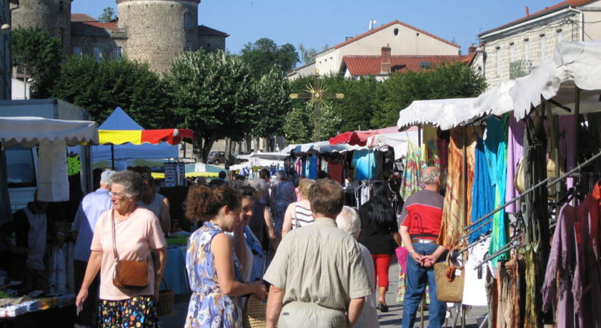
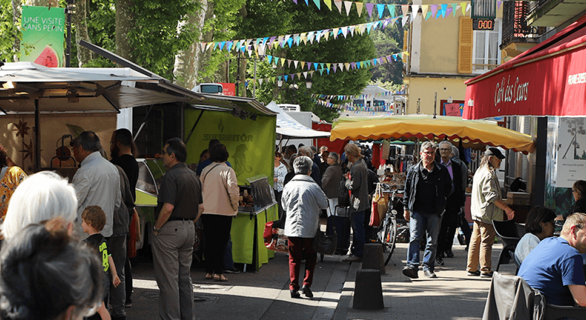
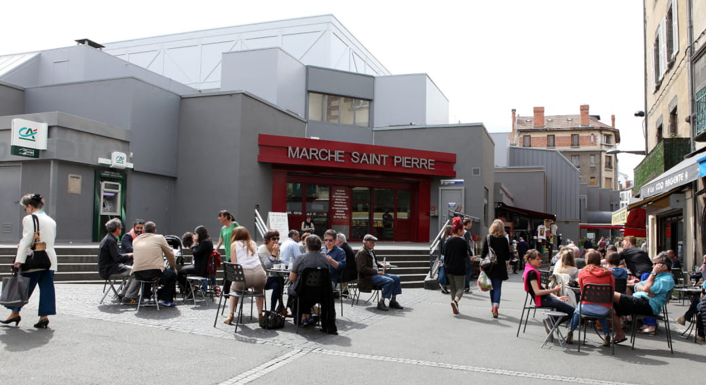
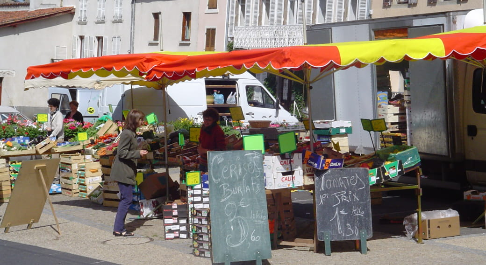

L'Auvergne ! Avec son environnement majestueux ne laissera personne
indiférrent
Retrouvez l'agenda des marchés, foires et brocantes du Puy-de-Dôme.
Ici, les marchés et foires sont une tradition. Chaleureux. Variés et colorés, les marchés,
foires et brocantes sont des lieux de vie où le terroir, l'artisanat et le savoir-faire sont à l'honneur !




De janvier à décembre !
Le vendredi matin, de 7H à 12h30 sur la Place Néron.
TARIFS
Gratuit. Cusset
Toute l'année, tous les mardis et samedis.
Clermont-Ferrand
Toute l'année. Tous les jours de 7h à 19h.
Fermé le dimanche.
Moyens de paiement : Carte bancaire/crédit, Chèque, Espèces
Sauxillanges
Toute l'année, tous les mardis de 8h à 12h.